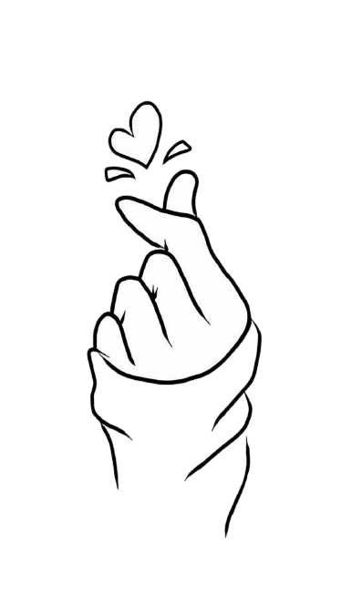
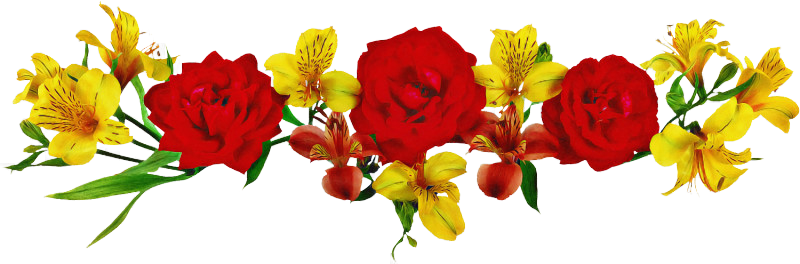
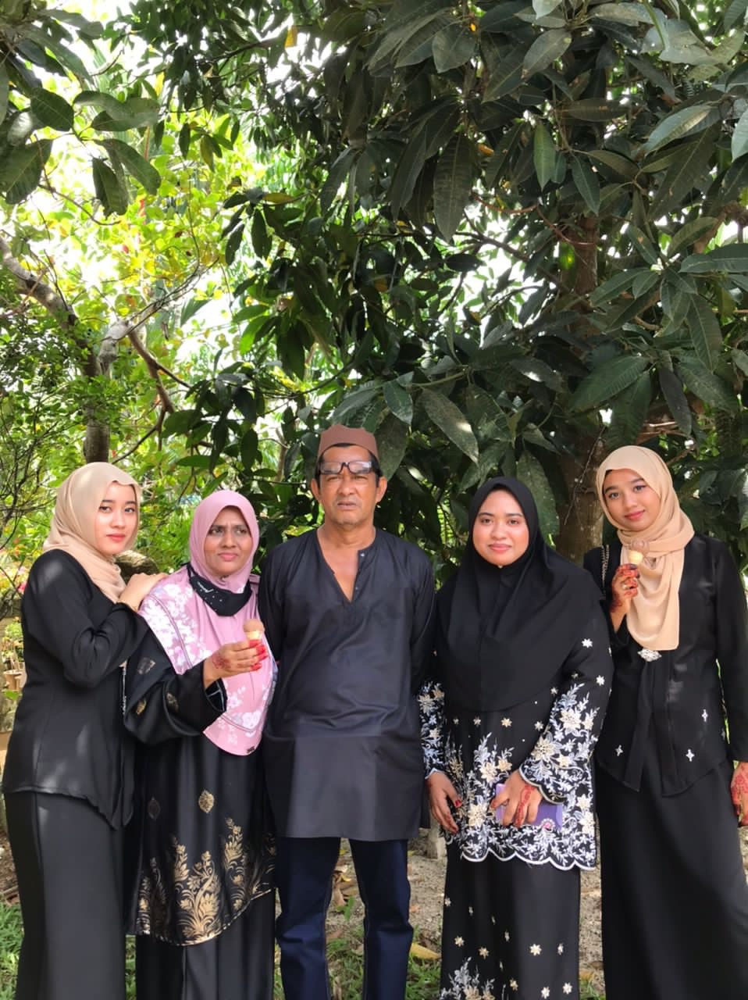
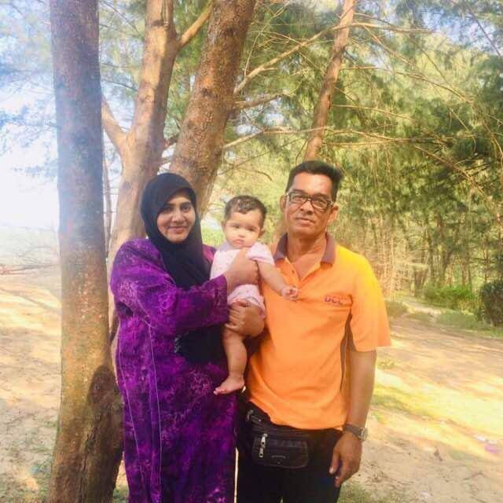
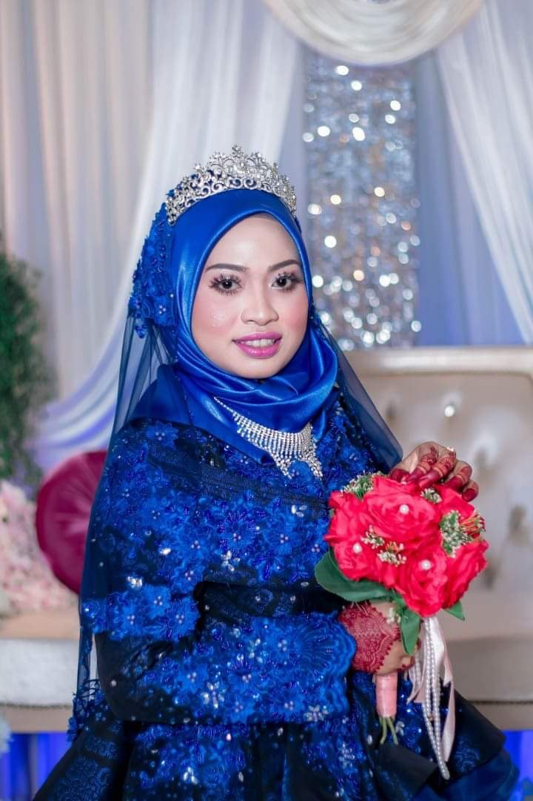
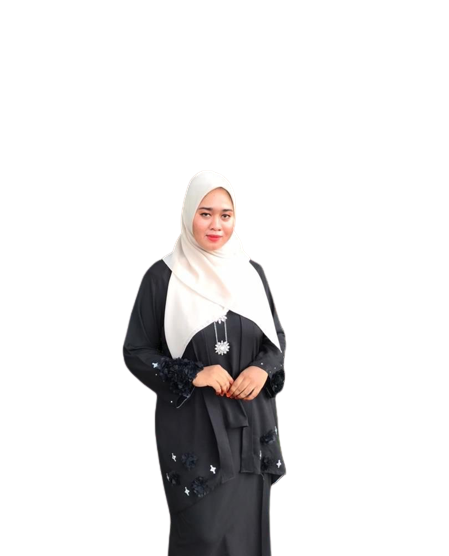
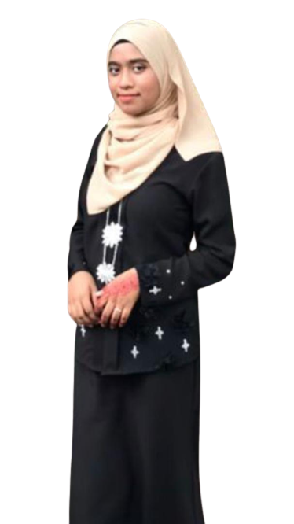
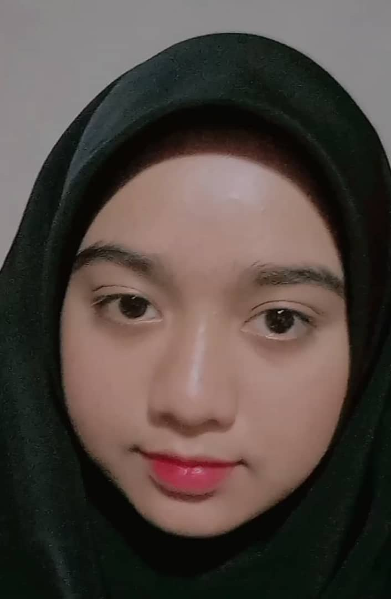
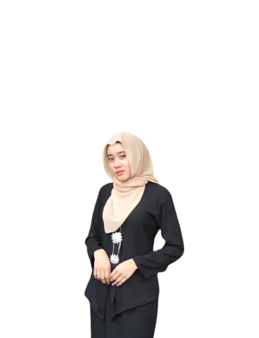

APPRECIATION
I'd like to thank everyone who made it possible for me to finish this assignment. I'm grateful because I was able to complete my homework inside the time frame set by my lecturer.
First and foremost, I want to express my gratitude to Sir Faizal Haini Fadzil for help and support in completing this task, as well as for teaching me in this course. Second,
I'd like to express my gratitude to all my family members for their unwavering support throughout my life's journey. Third, I'd want to express my gratitude to my classmates for their
insightful comments on this assignment, which motivated me to better it. Finally, I'd like to express my heartfelt gratitude to everyone who has helped me write this assignment,
both directly and indirectly. This assignment could not be performed in its entirety without the assistance and support of all those individuals.


My Beloved Family

The two persons are my parents. My father named is Alias Bin Semaun and my mother’s named is Roswani Binti Hassan. My father is 56years old and my mother is 51years old.
My parents, who help me through every stage of life, are my pillars of strength. Without them, I simply cannot imagine my life. Every time I become lost, my parents act as a guiding
light to show me the way. The strongest woman I know is my mum, a housewife. She gives me great food and assists me with my work. We are unaware of the numerous sacrifices my mother makes
on our behalf. She always looks out for us and prioritizes us over herself. She always gets up on time. She also serves as the family's glue, holding us all together. Parents are their children's
source of strength and support. They have a great deal of obligations. We should be grateful that we have parents because not everyone is fortunate enough to have them.
My father works outdoors, and my mother is constantly working from home. He is a good man who always lends a hand to my mum when he can. He is a kind individual who also supports the less fortunate.
My father is a sociable person who talks to our neighbors as well. He also excels at preserving his friendship with our family. My father puts in a lot of effort while working as a labourer. Despite his busy schedule,
he always makes time for us. On our days off, we go to restaurants or picnics. I am grateful to my father for all he does for us and never raises an objection. He is well-liked in society since he never hesitates to lend a hand. My father is a great help to anyone who asks for it. He is therefore a well-known individual and a devoted father who I admire.

Syafika: In this world, having sisters is a blessing. There are many of us who have sisters that we adore completely. While some people have older sisters, others have younger sisters. Nevertheless, having sisters is a blessing that we are all fortunate to have. I'll go into more detail about my sister and how much I adore her.
This is my elder sister. Her name is Nor Syafika Binti Alias, she is 24 years old. She has a sweet disposition and is extremely straightforward. She is incredibly adored by every member of the family. Her personality is quite endearing. She triumphs in every situation thanks to her consistent remarks and polite behavior. She may not be the best, funniest,
or most perfect sister in the world, but she is the one I can rely on. I can laugh best when I'm around her. I know that only she has the power to cheer me up. Every sister has been extremely significant in our lives in this way.

Syamimi: This is my second sister. Her name is Nor Syamimi Wahidah Binti Alias, she is 22 years old. She has a vibrant personality and can make any space more cheerful. My sister is a kind girl who always tries to assist others. Even if they are just acquaintances, she always helps everyone equally, as I have observed. She's also incredibly animated.
She is constantly moving because she dislikes sitting in one spot. She is also quite imaginative. For practically everything and anything, she has a solution. My sister has a remarkable aptitude for figuring out simple solutions to complex problems. We all regularly seek her guidance on how to make any kind of task simpler.

Fakhira: This is my fourth sister. Her name is Nor Fakhira Binti Alias, she is 17years old. My sister has always played a significant role in my life. She is younger than I am, but I know I can always rely on her for encouragement and support. She always seems pleased to assist, and I believe I can turn to her for anything. She is gorgeous, sweet,
and the best friend anyone could wish for. She is a very cheerful person who always gives me words of encouragement to keep fighting in my studies. She also always brightens my day with her funny antics.

Alia: Nor Alia Natasha Binti Alias, she is 14years old. She is my youngest sister. Her character is very different from other siblings. She likes to do his daily activities alone and has less interaction with others. But she is a lovely sister who tries to always help others. She never criticizes others for their actions. She is religious and holds
the view that no one should ever judge another individual. She is a very cute and nice sister even though sometimes she is annoying. But I love her so much because she always reminds me to take care of myself and always pray to the Allah.
ABOUT ME

Hello, my name is Nor Syakina Binti Alias, and I am a fifth-semester student. I graduated from high school five years ago, and I've since enrolled at the
Universiti Teknologi MARA, where I've had a great time. The Universiti is excellent, the people are wonderful, and I truly want to attend Universiti because of
the atmosphere there.
I have a good sense of humor and am an interesting, fun-loving gal. The one thing you should know about me is that while I initially come across as a very shy person,
once I get to know people and feel at ease in my surroundings, I start to feel amazing. I find it difficult to make friends, but once I do, it's wonderful and completely transforms me.
My close friends will attest to the fact that I am a highly sympathetic, sensitive, and nice girl. In addition, I have strong moral convictions and stick to my guns when it comes to right and wrong.
I am also a very straightforward and honest person.I am a student who enjoys mental challenges in the classroom, and I take advantage of both online and hands-on learning opportunities. I enjoy class because the material is frequently different from other subjects.
It gives me excellent concept perspective on a variety of learning-related topics
ACHIEVEMENTS
The accomplishments I make in school are an important component of my finest school years. Achievements in middle school, high school, or college may include individual academic successes as well as athletic or extracurricular successes.
I never forget them, regardless of how fantastic, excellent, or awful they were. The things we most like wishing for are achievements. Throughout my school days I have been a good scorer. I have had achieved A in all my favorite subject.
This is a moment of pride for me. Furthermore, I am a prefect that holds this position which is the assistant head of the happiness exco. I held this position for 4 years. In my extracurricular achievements, I hold the police cadet position.
Then, I became the treasurer for Rukun Negara club for one year. I also participated in handball sports representing the sports house. My another achievement is that I also obtained excellent results in the Sijil Pelajaran Malaysia (SPM), then
continued my studies at Universiti Teknologi MARA (UiTM).